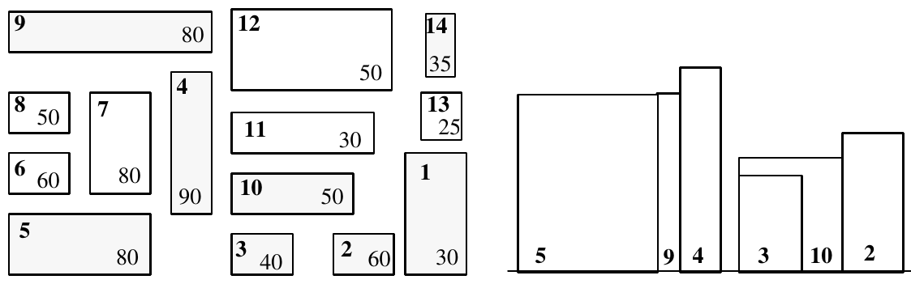

1992 ACM Scholastic Programming Contest Finals · Problem G
An elevation of a collection of buildings is an orthogonal projection of the buildings onto a vertical plane. An external elevation of a city would show the skyline and the faces of the “visible” buildings of the city as viewed from outside the city from a certain direction. A southern elevation shows no sides; it shows the perfectly rectangular faces of buildings or parts of faces of buildings not obstructed on the south by taller buildings. For this problem, you must write a program that determines which buildings of a city are visible in a southern elevation.
For simplicity, assume all the buildings for the elevation are perfect rectangular solids, each with two sides that run directly east-west and two running directly north-south. Your program will find the buildings that appear in a southern elevation based on knowing the positions and heights of each city building. That data can be illustrated by a map of the city as in the diagram on the left below. The southern elevation for that city is illustrated in the diagram on the right.

Input for your program consists of the numeric description of maps of several cities. The first line of each map contains the number of buildings in the city (a non-negative integer less than 101). Each subsequent line of a map contains data for a single building — 5 real numbers separated by spaces in the following order:
Each map is oriented on a rectangular coordinate system so that the positive x-axis points east and the positive y-axis points north. Assume that all input for each map corresponds to a legitimate map (the number of buildings is the same as the number of subsequent lines of input for the map; no two buildings in a single map overlap). Input is terminated by the number 0 representing a map with no buildings.
Buildings are numbered according to where their data lines appear in the map’s input data — building #1 corresponding to the first line of building data, building #2 data to the next line, and building #n to the nth line of building data for that map. (Buildings on subsequent maps also begin their numbering with 1.)
For each map, output begins with line identifying the map (map #1, map #2, etc.) On the next line the numbers of the visible buildings as they appear in the southern elevation, ordered south-to-north, west-to-east. This means that if building n and building m are visible buildings and if the southwest corner of building n is west of the southwest corner of building m, then number n is printed before number m. If building n and building m have the same x-coordinate for their southwest corners and if building n is south of building m, then the number n is printed before the number m. For this program, a building is considered visible whenever the part of its southern face that appears in the elevation has strictly positive area. One blank line must separate output from consecutive input records.
14 160 0 30 60 30 125 0 32 28 60 95 0 27 28 40 70 35 19 55 90 0 0 60 35 80 0 40 29 20 60 35 40 25 45 80 0 67 25 20 50 0 92 90 20 80 95 38 55 12 50 95 60 60 13 30 95 80 45 25 50 165 65 15 15 25 165 85 10 15 35 0
For map #1, the visible buildings are numbered as follows: 5 9 4 3 10 2 1 14